第一章 有机化学的分子结构基础
1.1 有机化合物的基本类型
有机化合物如何分类是一个老生常谈的话题，这里简单讨论一下即可。
1.1.1 依照碳骨架分
有机物是以碳为骨架的，碳骨架的不同对有机物的性质有很大影响，根据碳骨架，可以将有机物详细分为以下几类：
- 脂肪族化合物：链状的碳氢化合物
- 脂环族化合物：环状的碳氢化合物
- 芳香族化合物：带有芳香性(详见普通化学笔记有机化学章节)的环状碳氢化合物
- 杂环化合物：一个或多个碳原子被杂原子(如\({\ce{C, N, O}}\)等等)取代的环状碳氢化合物
- 芳杂环化合物：带有芳香性的杂环化合物
具体例子可见下图：
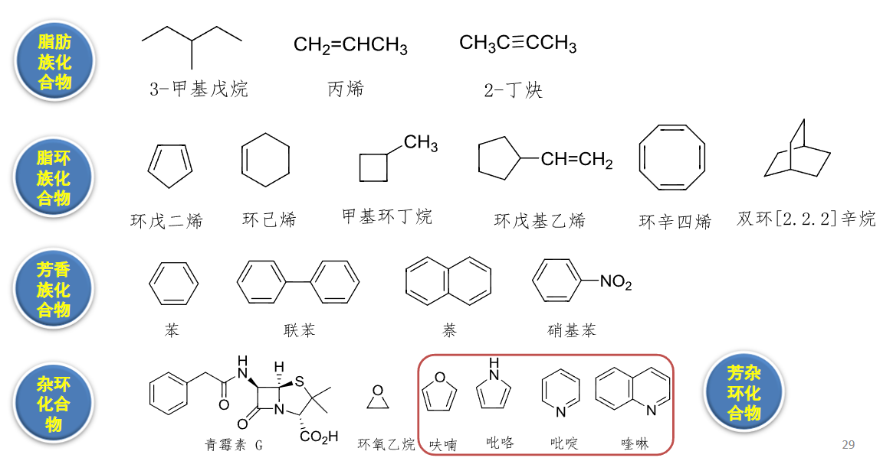
1.1.2 依照官能团分
官能团：决定化合物的主要性质，反映化合物的主要特征。
具体可见下图：
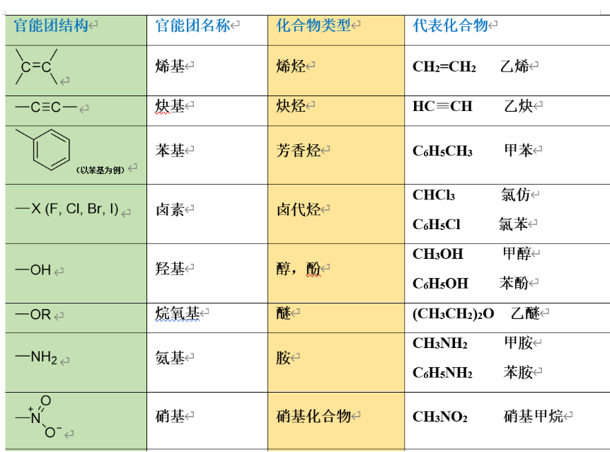
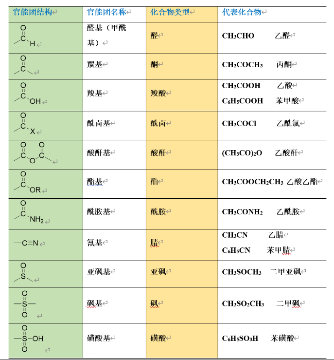
1.2 共价键
1.2.1 共价键的实质
化学界早有用短线“-”来表示化学键，但直到1916年才由Lewis提出了共价键理论，用电子对表示共价键，“-”的明确含义为一对电子
八隅体规则：
由共价键连接而成的有机化合物分子中，除氢原子外，第二周期的原子通过共用电子对而达到8电子外层结构，具有惰性气体的结构。值得注意的是，对于第三、四周期的原子，由于其具有d，f轨道，其外层电子数量可以大于8.
但是到这里还是没有具体说明共用电子对是如何形成的，它和共价键之间的本质联系是什么。
针对这些问题，在20世纪30年代，化学家L. Pauling和物理学家J. C. Slater提出了价键理论——电子配对理论
价键理论——电子配对理论：
共价键的形成是由于成键原子的原子轨道相互交盖，自旋反平行的两个电子配对的结果。
值得注意的是，两个原子相互接近形成共价键的时候，自旋相反的两个电子在原子轨道重叠区域内为两个成键原子所共有。
1.2.2 原子的电子构型
电子在核外的运动不是绝对的毫无规律，实际上不同的电子运动在核外的不同轨道上(可联系普通化学笔记相关章节)，这些轨道被称为原子轨道。
原子轨道：
描述原子中电子的运动状态——形状和伸展方向
1.2.3 共价键的不同类型与特点
形成共价键时电子云有两种重叠方式可以采取，分别是“头碰头”和“肩并肩”
Attention：
- “头碰头”的类型形成\({\sigma}\)键，所有轨道之间都可以形成\({\sigma}\)键。
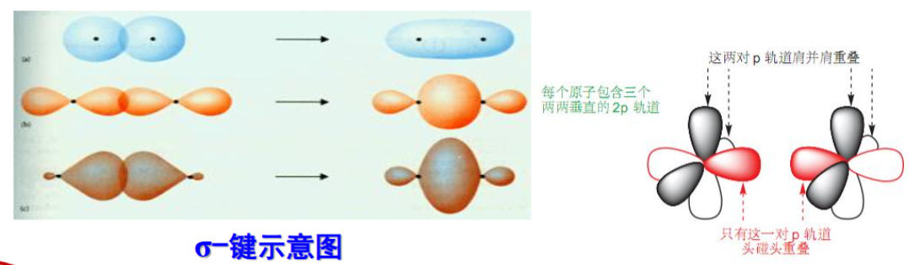
- “肩并肩”的类型形成\({\pi}\)键，只有\({p}\)轨道或者\({d}\)轨道之间可以形成\({\pi}\)键
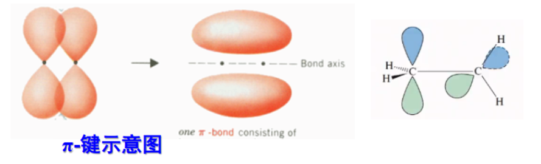
共价键特点：
- 方向性：两原子轨道沿轨道对称轴的方向重叠
- 饱和性：两个原子的未成对电子自选反平行配对后不再与第三个电子配对
- 定域电子：成键电子只能在轨道重叠的区域内运动。(回忆离域电子与离域键)
1.3 有机化合物的结构表达式
同无机化学的学习不同，单纯的分子式表示在有机化学上有着严重的局限性，特别是其无法准确展示相应有机化合物的结构特点。
对此，有机化学上有两种结构表达式：
1.3.1 Lewis结构式
Lewis结构式是以电子对形式来表示共价键的分子结构式，举例见下图：
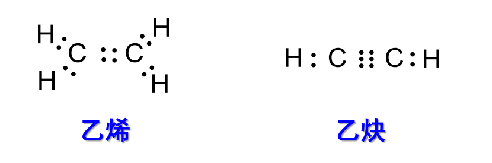
注意到这里的结构式可以很好体现八隅体规则
Lewis结构式也存在结构简式的表达，其中成键电子对用“-”表示，单独标注每一个原子上的未成键电子，示例如下：
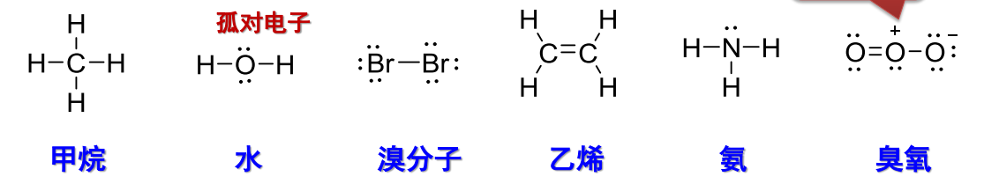
注意到右侧的臭氧\({\ce{O_3}}\)，其结构简式中间的\({\ce{O}}\)原子上带有一个正电荷，右侧的带有一个负电荷，此被称为形式电荷。
形式电荷：
形式电荷的计算公式：
形式电荷 = 原子的价电子数 - (未共用电子数 + 共用电子数/2) 形式电荷产生的原因：
为了满足各个原子的八隅体结构，也可以理解为分子内原子之间关于电子得失的“盈亏”共享电子对：
- 每个原子各出一个电子，则相安无事
- 由其中一个原子出一对，出电子的一方带上一个形式正电荷，另一个带上一个形式负电荷。
针对八隅体规则，还有如下公式：
尝试写出以下分子或离子的Lewis结构式：
答案如下：
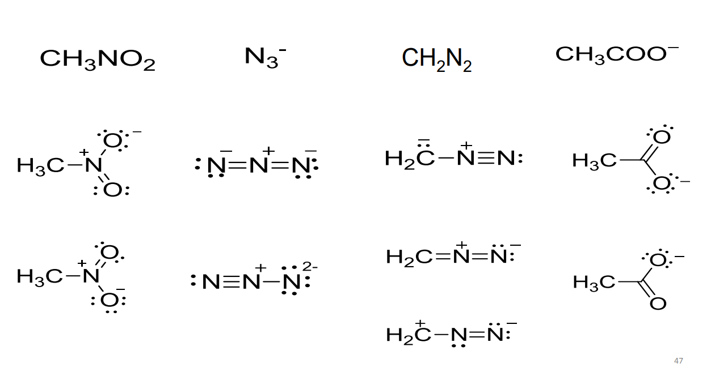
1.3.2 Kekulé 结构式
Kekulé结构式相较于Lewis结构式省略了孤对电子，示例如下：
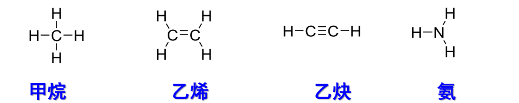
当然还有我们更加熟悉的结构简式和键线式：
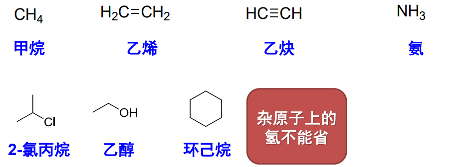
值得注意的是无论是哪种书写方式，都需要有其强调官能团的结构。
1.4 杂化轨道理论
在普通化学的学习中我们就已经初步了解到，单纯的价键理论是无法解释很多分子的空间构型的，于是杂化轨道理论应然而生。
杂化轨道理论本质上遵循自然界中的能量最低法则。
常见杂化轨道类型：
- \({\ce{sp^3}}\)杂化：
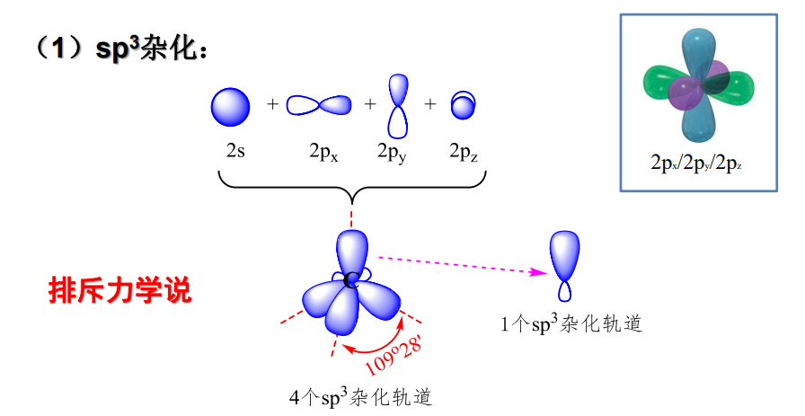
- \({\ce{sp^2}}\)杂化：
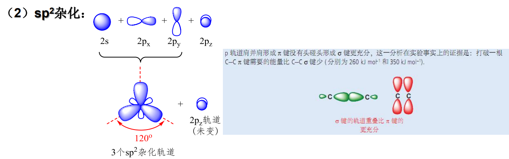
值得注意的是，有采用\({\ce{sp^2}}\)杂化的最具代表性的分子——烯烃，由于碳碳双键不能旋转造成的特殊结构，使其具有顺反异构的现象。
- \({\ce{sp}}\)杂化：
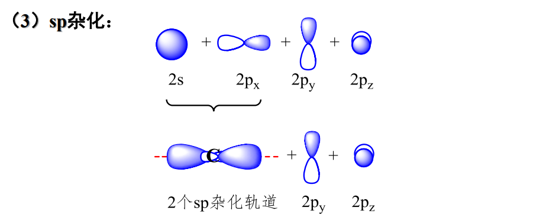
1.5 共价键的键长、键能和键角
我们如何定量描述一个共价键？谜底写在谜面上，我们可以从键长、键能和键角三方面来描述它。
共价键的三个参数：
- 键长：共价键的键长越短越牢固
- 键能：键能越大，共价键越牢固。
- 解离能：
- 键角：两个共价键之间的夹角，与成键前中心原子杂化轨道之间的夹角相近。
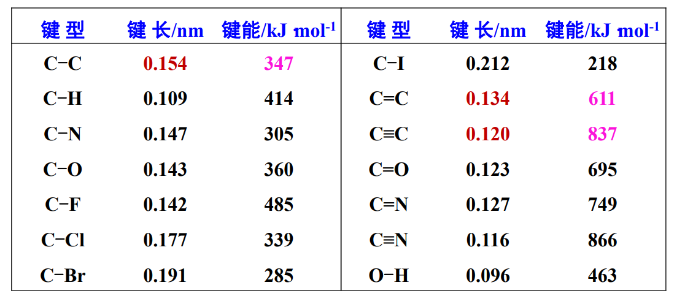
从上表，得知单键，双键，叁键键长不同，\({\sigma}\)键和\({\pi}\)键的键能不同。
1.6 共价键的极性、分子的偶极矩和诱导效应
1.6.1 偶极矩
回顾高中化学知识，元素具有电负性，电负性越大，对电子的吸引能力越强，非金属性越强。
而具有不同杂化轨道的碳原子的电负性也会有差别：
原子电负性的差异会导致“极性”的产生，也就是电子云分布不均匀，为了客观衡量极性的大小，有机化学内提出了偶极矩这个概念。
1.6.1.1 键的偶极矩
电负性与键距紧密相连，后者是键的偶极矩。
键距：
定义：键距\({\mu}\)等于正负电荷中心的距离\({d}\)与正或负电荷\({q}\)的乘积，单位是\({D}\)，德拜。
\[{\mu = q \times d}\]键距是一个矢量，有方向性，通常规定为由正到负，如下：
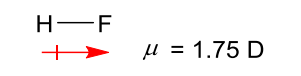
键距的大小与成键原子的电负性有关，两个原子之间电负性的差值越大，键距越大\({(q\uparrow,\mu\uparrow)}\)
键距的大小也和两个原子半径有关，原子半径越大，键距越大\((d\uparrow,\mu\uparrow)\)
1.6.1.2 分子偶极矩
分子内的偶极矩则是键距的矢量和。
基于电负性，与偶极性，引出有关于共价键的极性的概念。
按非极性共价键，极性共价键与离子键的顺序，其中键的极性越来越强，离子性越来越强。
静电势图——分子中各区域实际电子云密度分布
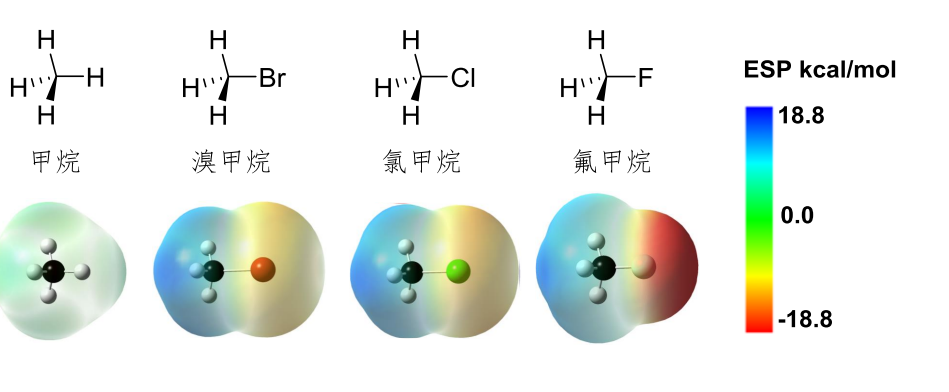
1.6.2 诱导效应
诱导效应：
诱导效应的产生： 原子电负性不同导致分子中电子密度分布不均匀，使整个分子发生极化
诱导效应的特点： 诱导效应源自于原子电负性不同引起的静电作用，是永久性的，其特征是： + 诱导效应的强弱取决于基团吸/斥（推、给）电子能力的大小，能力越大，诱导效应越明显。 + 诱导效应沿着\({\sigma}\)链传递，传递越远，效应越弱。 + 诱导效应有叠加性。
举例如下，戊烷和1-氯戊烷中\({\ce{C-C}}\)键的键距：
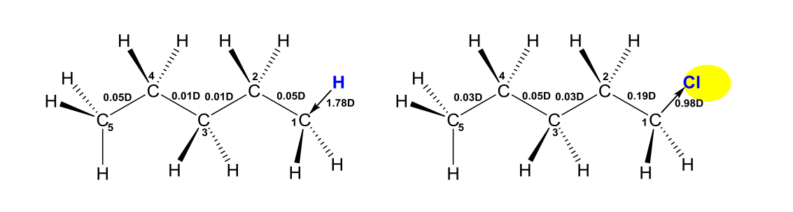
基于诱导效应，以氢原子为标准\({(I=0)}\)，原子或基团吸电子能力比氢强的，则称具有吸电子诱导效应\({(-I)}\)，吸电子能力比氢弱的，则称具有给电子诱导效应\({(+I)}\)。
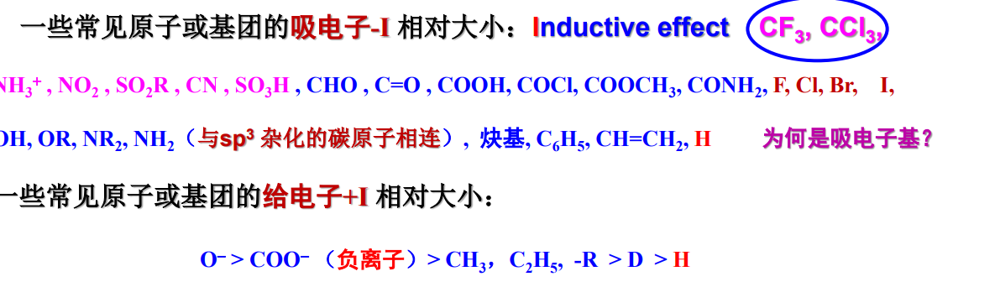
值得注意的是，原子或基团的诱导效应很大程度上取决于它和谁相连，因此要动态分析。
诱导效应可以改变分子的物理性质和化学性质，比如酸碱性，中间体稳定性，电子云分布情况等等。
诱导效应改变分子性质：
- 诱导效应改变酸碱性：
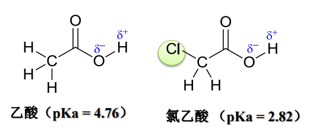
- 诱导效应改变电子云密度：
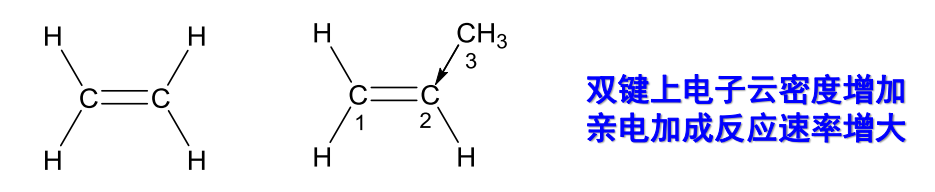
- 诱导效应通过影响分子上电荷的分布，改变离子的稳定性（电荷越分散越稳定）
1.7 分子轨道理论
分子轨道理论的提出是为了弥补价键理论的不足，比起价键理论更关注原子轨道间的重组，电子之间的配对，分子轨道理论关注多原子组成的分子上电子的整体运动规律。
分子轨道理论：
分子轨道理论中，分子轨道是由原子轨道波函数\({\varphi}\)线性组合，得到分子轨道波函数\({\Psi}\)，注意组合前后总轨道数是不变的。
组成分子轨道的原子轨道，能量相近，对称性（位相/符号）相同，并且能最大程度地重叠，这样组成的分子轨道能量最低。
以上特点使得分子轨道具有方向性，如果符号/位相相同的原子轨道重叠，则形成的分子轨道能量低于原子轨道，称为成键轨道，如果相反，则形成的分子轨道能量更高，出现节面，此处电子云密度为0，称为反键轨道。
我们一般将成键轨道记作\({\Psi}\)，反键轨道记作\({\Psi^*}\)
以下是氢分子基态的轨道能级图:
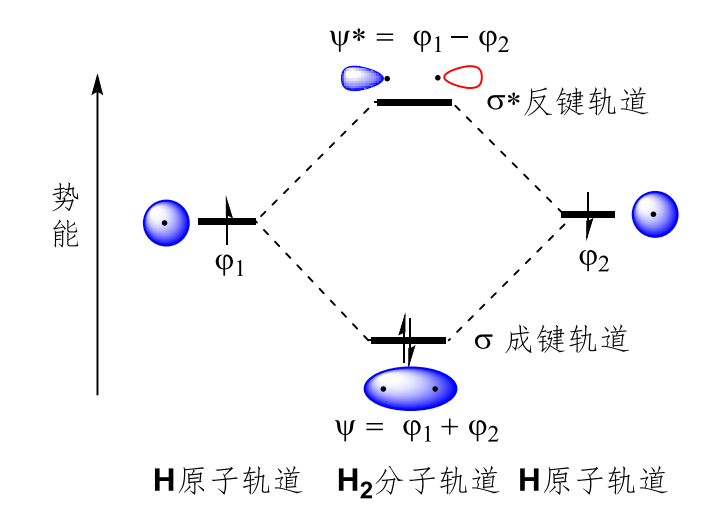
以下是\({\sigma}\)键和\({\pi}\)键的分子轨道示意图：
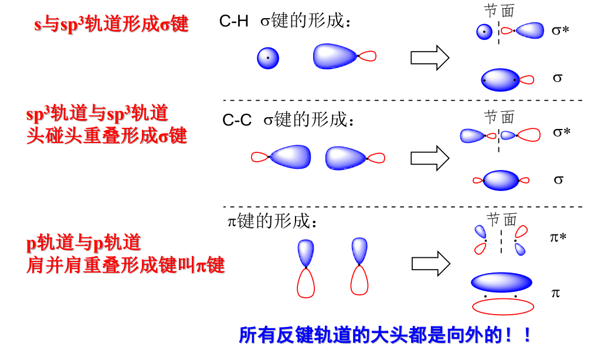
1.7.1 休克尔分子轨道法
对于多原子分子，其分子轨道要复杂的多，理论应用有很大困难，对此，\({E.H\"{u}ckel}\)提出了休克尔分子轨道(HMO)法，采用简化的近似分子轨道模型，处理共轭体系分子中的p电子。
在烯烃与芳香烃等共轭分子中，参与共轭的碳原子都在同一平面上，彼此之间以\({\sigma}\)键相连，各自有一个垂直于分子平面的p轨道，“肩并肩”形成\({\pi}\)分子轨道。在休克尔分子轨道法下，\({\pi}\)分子轨道可以被单独处理，我们认为其在\({\sigma}\)键骨架上运动，回归了类似我们高中所学的那个苯环大\({\pi}\)键的模型。
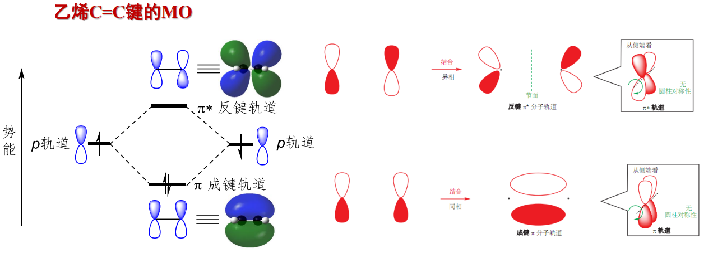
1.8 共轭体系和共轭效应
1.8.1 共轭体系
构成共轭体系的必要条件：
三个以上彼此相连的原子处于同一平面，每个原子都有一个轨道垂直于这个平面。
常见的共轭体系有以下几种：
- n-π共轭/p-π共轭：
对于参与与\({\pi}\)键共轭的原子，其相比未参与共轭时候键长更短，更加平均，带有部分双键的性质（电子云密度平均化）举例如下：
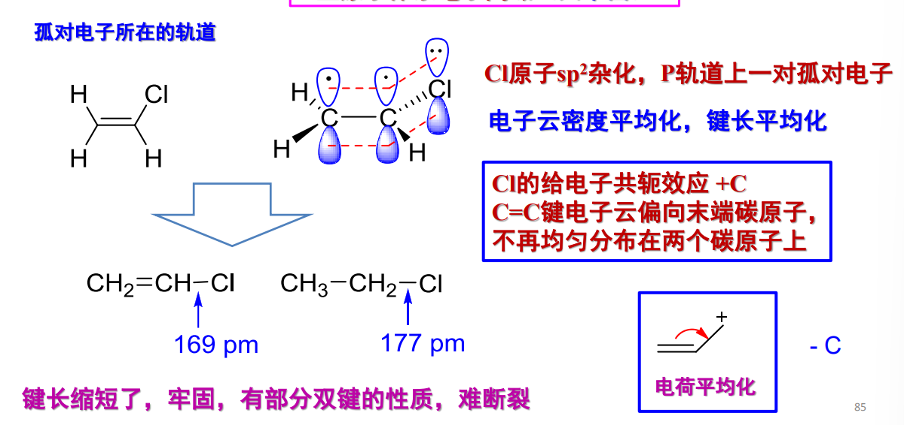
- p-π共轭体系：
这是共轭体系里的一种，也相当常见，参与共轭的原子会提供其p轨道，而其p轨道可能是空轨道、单电子或者孤对电子，举例如下：
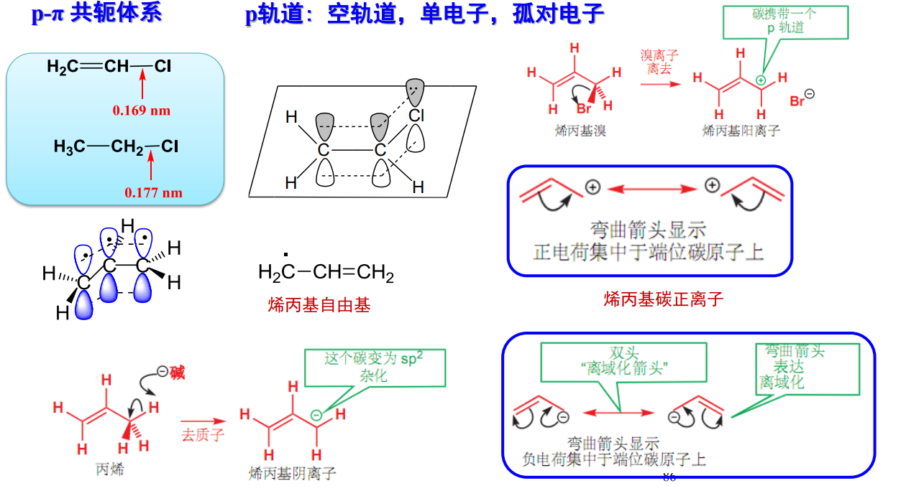
- π-π共轭体系：
这种共轭体系的形成来自于\({\pi}\)键之间通过一个单键的“套娃”，举例如下：
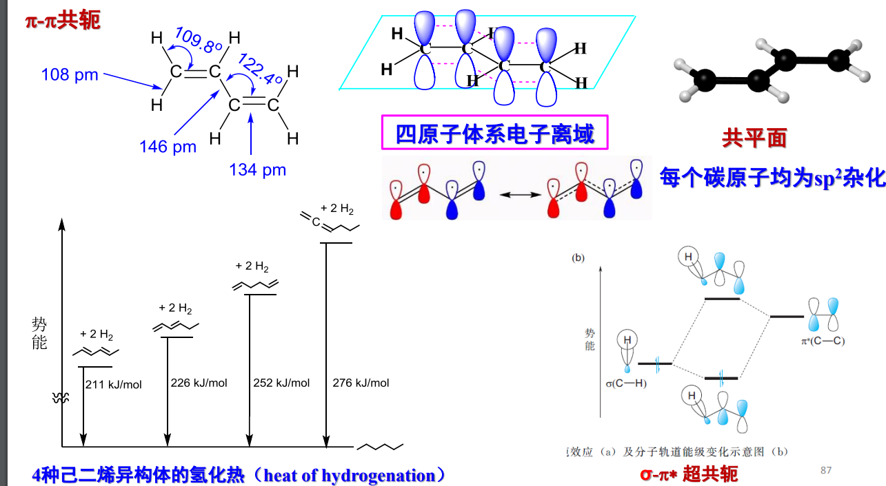
特别要注意的是，上图中左下角表示不饱和烃的氢化热，可用来衡量其稳定度，图中可以看出共轭体系的氢化热显著小于非共轭体系。其中己-1,5-二烯和己-1,3-二烯之间存在\({26kJ/mol}\)的差值，此可视为己-1,3-二烯的共轭能。
1.8.2 共轭效应
共轭效应：
\({\pi}\)键电子不是在某个单一\({\pi}\)键内运动，而是在大\({\pi}\)键内运动，这种现象被称为电子的离域。存在电子离域的体系称为共轭体系，共轭体系所表现的效应称为共轭效应。
共轭效应通常会使得： + 电子云密度平均化 + 键长趋于平均化 + 体系能量降低，稳定性增加
对前文共轭能的补充： + 由于共轭结构的稳定作用导致分子的氢化热降低，由此产生的氢化热差值称为共轭能或离域能。化合物共轭能越大，内能就越低，越稳定。
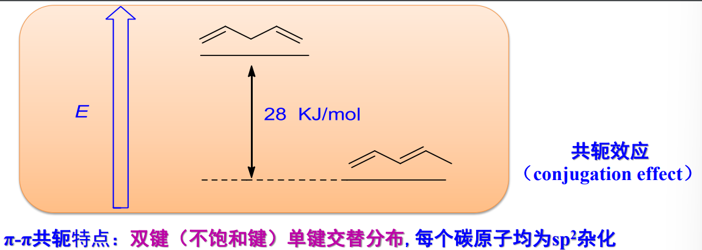
Attention：
乙烯或孤立二烯中\({\pi}\)电子的运动仅限于两个碳原子间的局部区域，其是定域的。
同诱导效应类似，共轭效应也有正负之分，其中可以给出电子的称为给电子共轭效应，反之则为吸电子共轭效应。
给电子共轭效应记作\({+C}\)，吸电子共轭效应记作\({-C}\)
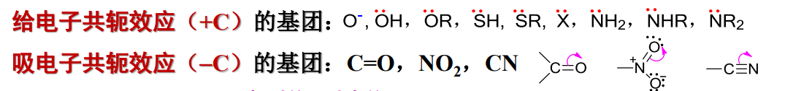
必须强调的是，对共轭效应的讨论也是相对的，动态的。
Attention：
共轭效应的正负与诱导效应的正负之间不存在必然的联系，比如氯乙烯中的\({\ce{Cl}}\)，其为吸电子诱导效应\({(-I)}\)，但是是给电子共轭效应\({(+C)}\)，与碳碳双键相连的羰基\({\ce{C=O}}\)，其上碳是吸电子诱导效应\({(-I)}\)与吸电子共轭效应\({(-C)}\)。
1.9 共振论
Lewis结构式虽然强大，但是在画一些化合物的Lewis结构式时往往会出现多种结构，举例如下：
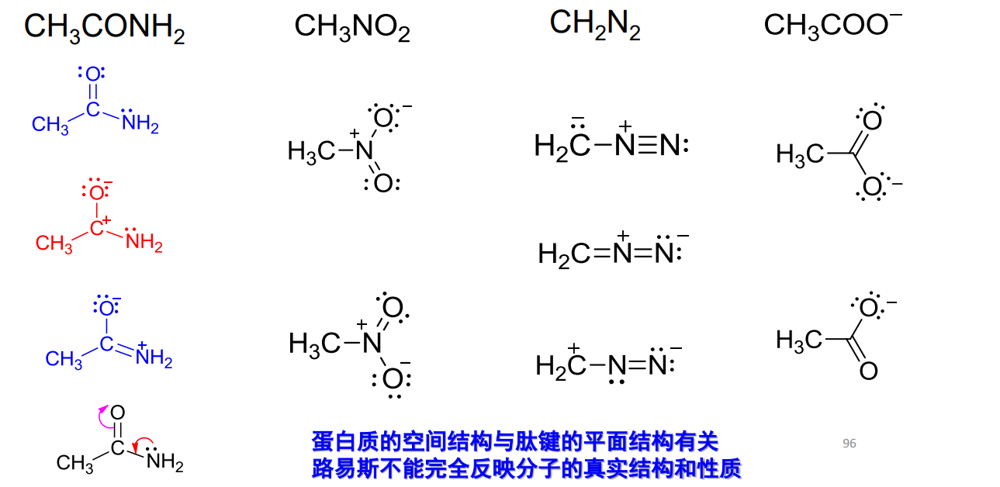
主播主播，你的Lewis结构式确实很强大，但是还是太多种情况了，有没有更加统一明晰的结构表达方式？
有的兄弟有的，这就是共振论
1.9.1 共振结构与共振杂化体
共振论理论：
当一个分子、离子或自由基按价键规则可以写出一个以上的Lewis结构式时，其真实结构就是这些Lewis结构的加和。
可以理解为，每一个Lewis结构式都代表一种极限结构，又称为共振结构。真实分子、离子或自由基是所有共振结构的加和形式，称共振杂化体。
对于共振结构最好的切入角度，就是苯环：
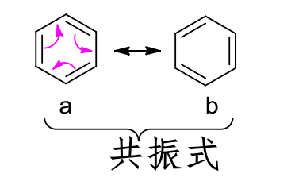
对于苯环来说，其环上的每一个键都处在单、双键中间，也就是上图中两个共振式的平均加和，最终的结构为苯的共振杂化体。
值得注意的是，共振之间需要以\({\leftrightarrow}\)相连，更多具体事项将会在下一小节讲解。
下再举一例来体会共振杂化体：
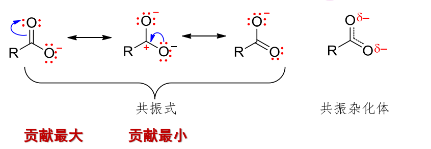
在共振式中，通常结构上更加稳定的，对共振杂化体的贡献更大。
Attention：
共振体系中的原子必须共平面，发生共振的电子通常为π电子、孤对电子或单个电子。
共振杂化体的合理性在于，其相对平均了分子中的电荷、键长，使得体系更加稳定。而这些平衡是在多个共振式中取了一个共同点，达成了一个多式子都满意的结果()
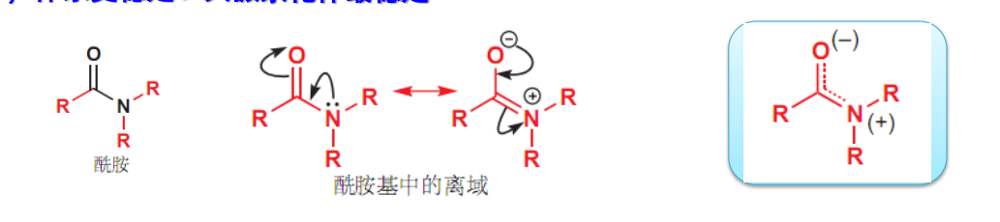
1.9.2 共振结构的书写
1.9.2.1 表示方式和符号
- 共振结构之间采用双箭头“\({\leftrightarrow}\)”相连。
- 共振的本质是共振体系中电子的离域，共轭是共振的前提。表示电子的离域/合理运动，一对电子采用“\({\curvearrowright}\)”表示，一个电子采用弯鱼钩符号。
- 一些Lewis结构式里可能带有形式电荷，在共振结构的表达中采用了\({\delta^+}\)和\({\delta^-}\)来表示部分正/负电荷
1.9.2.2 共振结构书写基本原则
- 共振的本质是共振体系中电子的离域，\({\sigma}\)键的电子是定域的，故不能移动，即书写共振结构时候，不能改变原子核相对位置。可以移动的电子包括共轭体系下的\({\pi}\)电子，孤对电子与未成对电子
- 遵守价键规则，碳不可以超过四价，第二周期元素\({(\ce{B、C、N、O和F})}\)的价电子不能超过8个。
- 所有共振结构中，净电荷数、未成对电子数必须相同
- 对于不同原子之间形成的双键、叁键，\({\pi}\)电子倾向往电负性大的原子方向运动。比如碳基中，电子应该向\({\ce{O}}\)偏移。
- 书写共振式时候，需要考虑轨道方向性的需求。
共振结构书写流程：
- 先写一个常见的路易斯式(最稳定的，形式电荷尽可能少的)
- 考虑共轭体系下的电子离域，从带有孤对电子（最好是负离子，不可能是正离子）的原子开始，一步步将电子推给相对电负性更大的原子
- 注意，箭头要从键或电子指向键或原子
- 遵守价键规则等一系列规则
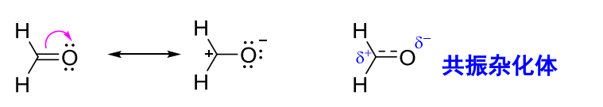
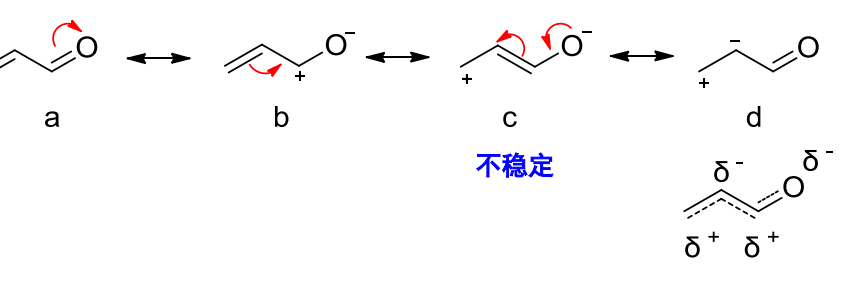
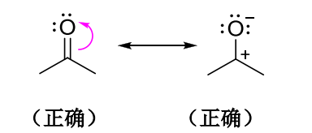
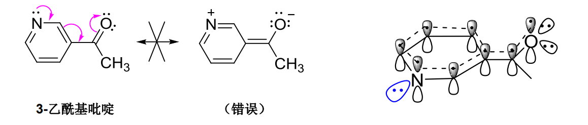
1.9.3 共振稳定作用
正如滋味尚分酸甜苦辣，共振结构之间亦有不同，越稳定的共振结构对共振杂化体的贡献越大，共振杂化体的能量低于任何一个共振式的能量。
论稳定共振结构的良好修养：
- 更多的共价键
- 更多的满足八隅体结构的原子
- 形式电荷越接近0越好，正负电荷越分散越好
- 同性电荷要远离，异性电荷要接近
- 特别的，此点亦有不同情况，见下图：
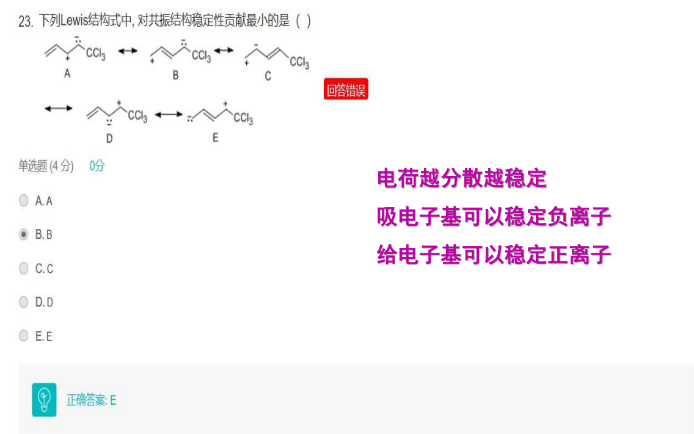
负电荷在电负性较大的原子上更稳定，给电子基可以稳定正离子- 参与共振的共振结构越多，分子越稳定
顺口溜如下：
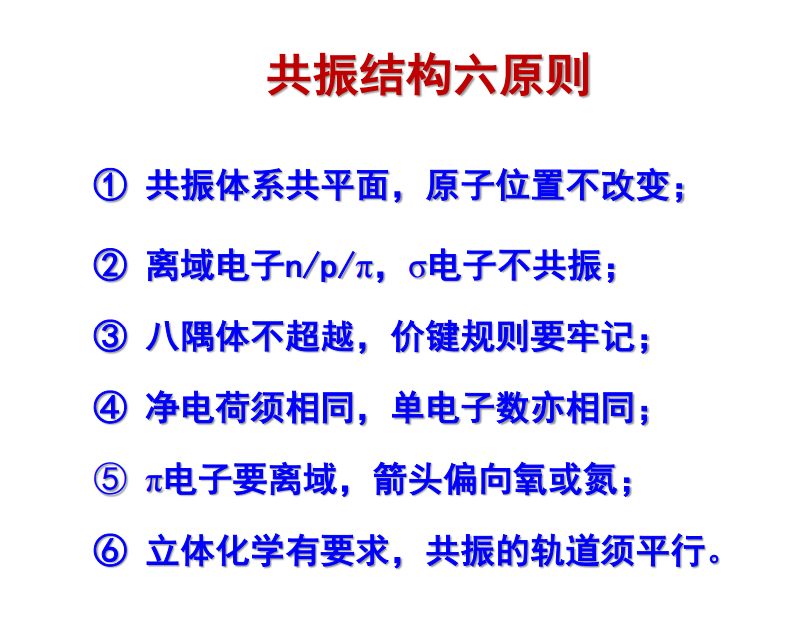
1.10 分子间的弱作用力
前文中我们探讨过了很多原子之间，分子之内的作用，在这部分我们将讨论分子之间的弱作用力，在学习过程中要注意区分各个作用力之间的区别。
分子间弱作用力可以影响：沸点、熔点、溶解度等物理性质。
1.10.1 范德华力
范德华力：
分子之间存在非定向的、无饱和性的、较弱的互相吸引的作用力。
能量一般小于5kJ/mol
范德华力通常可以分为以下三类（本部分来自于普通化学笔记）：
- 色散力（诱导偶极-诱导偶极）：
由于瞬间偶极而产生的作用力。（电子云的大小会影响色散力的大小，一般电子云越大，色散力越大） - 诱导力（偶极-诱导偶极）：
由于极性分子使其他非极性分子的电子云变形，产生的诱导偶极所形成的作用力。 - 取向力（偶极-偶极）：
极性分子间按照其极性方向而一定顺序排列，形成的永久偶极产生的作用力
以下比喻来自季鹏飞老师：
取向力就是两个E人，两个人都主动出击，不停地聊。
诱导力就是一个E人和一个I人，虽然I人不喜欢说话，但是经不住E人的健谈，也产生了聊天的欲望。
色散力就是两个I人坐一起，虽然一句话不说，但是怪尴尬的，两个人心里时不时说想说句话，偶尔眼神对上就笑一下。
在这里提前说明，化合物的沸点只与分子间作用力有关。
举例如下：
- 烷烃为非极性分子，分子偶极矩为0，分子间作用力仅有色散力。
- 分子越大，色散力越强，所以正烷烃随碳原子数增加，沸点越高
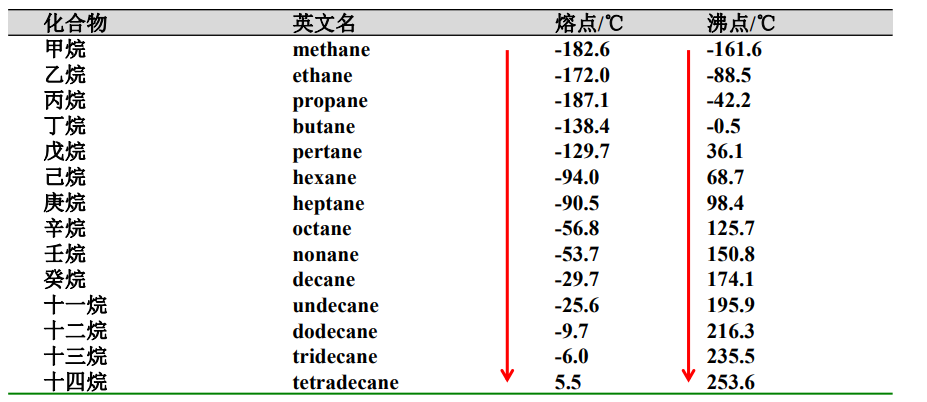
1.10.2 氢键
氢键：
分子之间存在氢与其他原子互相吸引的，有饱和性和方向性的静电作用力，本质上是一种取向力，形如：\({\ce{X-H\cdots Y}}\)，其中：
- \({\ce{H\cdots Y}}\)表示氢键
- \({\ce{X-H}}\)表示氢键供体
- \({\ce{Y}}\)表示氢键受体（分子、离子或分子片段），富电子，含孤对电子的原子
电负性大且原子半径小能量一般在25~40kJ/mol之间。比一般范德华力要强上许多
氢键可以具体分为两类：分子间氢键与分子内氢键。
- 分子间氢键：在分子之间的形成的氢键，氢键供体与氢键受体不是同一个分子，如下：
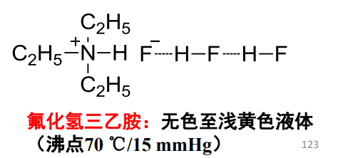
- 分子内氢键：在分子之内形成的氢键，氢键的供体和受体都是同一个分子。如下
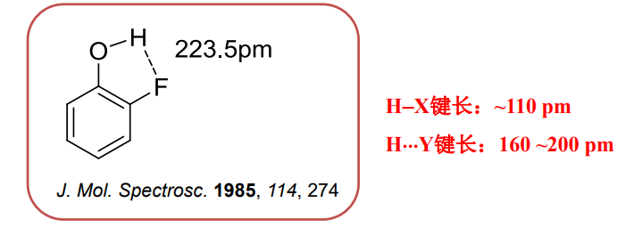
值得注意的是，倾向形成分子间氢键的分子的沸点和水中溶解度通常比倾向形成分子内氢键的分子高。举例如下：
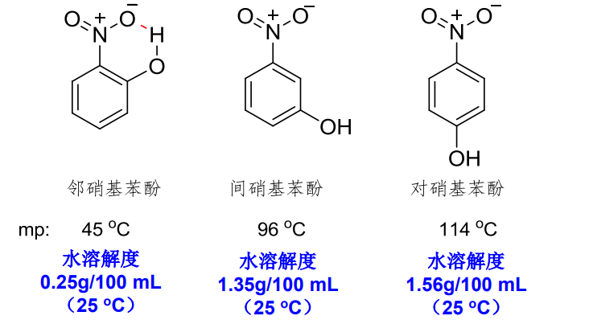
1.10.3 π-π堆积作用
π-π堆积作用：
芳香性化合物通过弱相互作用力形成特殊的空间排布。
π-π堆积作用能量约为1~50kJ/mol
举例如下：
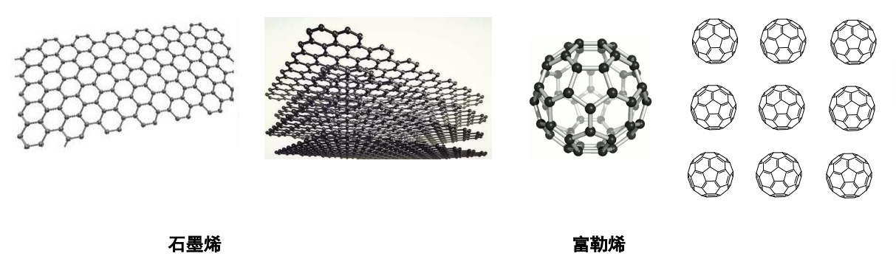
1.10.4 分子间弱作用力对物理性质的影响
1.10.4.1 沸点
沸点：
定义：分子由液相变为气相时的温度。
本质：温度升高，分子热运动加剧；液相时候分子存在内聚力将分子聚集在一起；内聚力越大，分子越难分开，沸点越高。
结合前文知识，我们可以将影响物质沸点的因素分为色散力、分子极性与氢键等三方面，与高中知识联系，色散力可以理解为分子量的影响。
比较物质沸点的高低，通常分为三步走：
- 分子间能否通过氢键缔合
- 极性大小（偶极之间的相互作用）
- 色散力/分子量
注意，以上顺序是按照作用力相对大小进行排序，在大部分情况下，应该按照以上顺序进行逐一比较，例如，氢键较多者，即使极性较小，沸点也更高。
由以上性质总结： 1. 炔烃沸点比相同碳数的烷烃和烯烃高 2. 反式烯烃比顺式烯烃沸点高 3. 脂肪烃中，相同碳数的支链烃比直链沸点低，支链越多，沸点越低
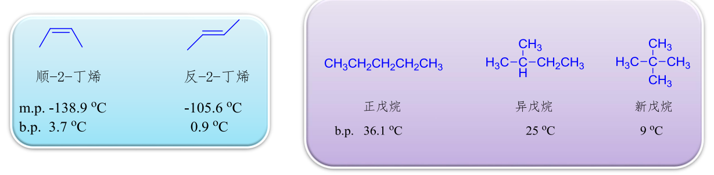
1.10.4.2 熔点
熔点的情况相较于沸点更加复杂，其除了与分子间作用力有关，还与分子在晶格中的排列情况有关，总结如下：
因此，总体上随着碳数增加，脂肪烃沸点升高，但是偶数烃对称性好于奇数烃，所以前者沸点增幅大于后者。
同时，相同碳数下的同分异构体中，对称性较好的熔点更高。
以上两条综合考虑了熔点中分子间作用力与晶格排列两种因素。
具体说明如下图：
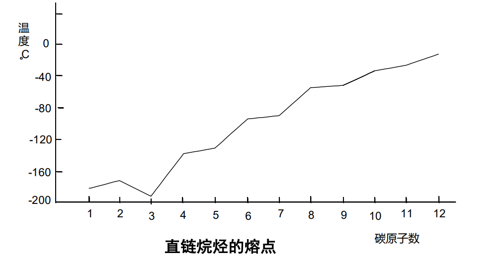
同理，我们可以推测反式构型的烯烃比顺式构型的烯烃熔点更高。（因为前者可以堆积得更加“紧密”，对称性更好）
1.10.4.3 水溶性
物质溶解性一般可根据“相似相溶”的经验规律来判断，分子结构相似的化合物更容易互相溶解。
羟基、羰基、羧基、氨基和磺酸基等都是常见亲水基团（极性强，可参与形成氢键）
1.11 总结
本章的所有知识点涵盖为一句话就是：结构决定性质
具体总结如下图：
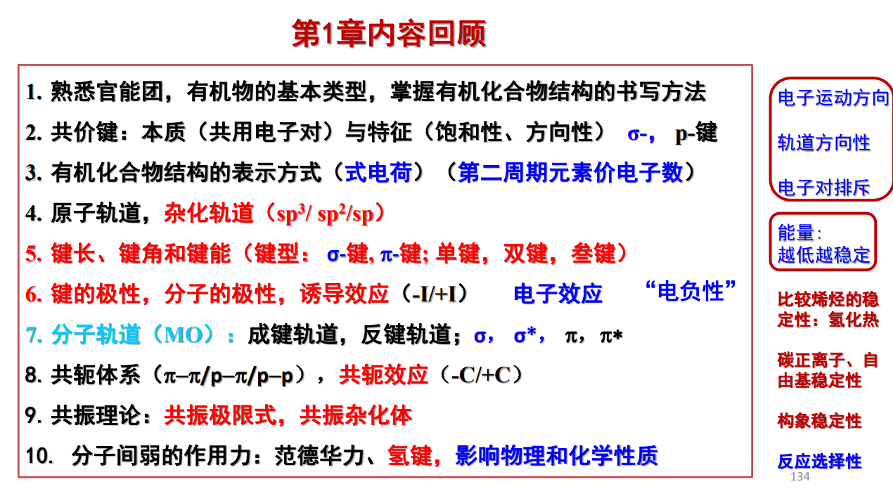